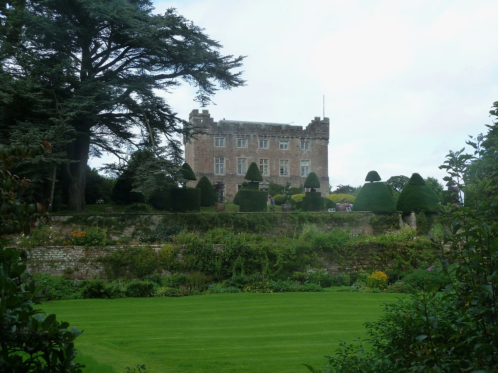

Ullswater Valley, Penrith
Askham Hall
A fourteenth-century castle gatehouse, still in Lowther hands. The kitchen gardens feed Allium directly.
Sits east of Ullswater, the estate behind, the lake valley in front. A good first stop on the eastern side.
Enquire about this house